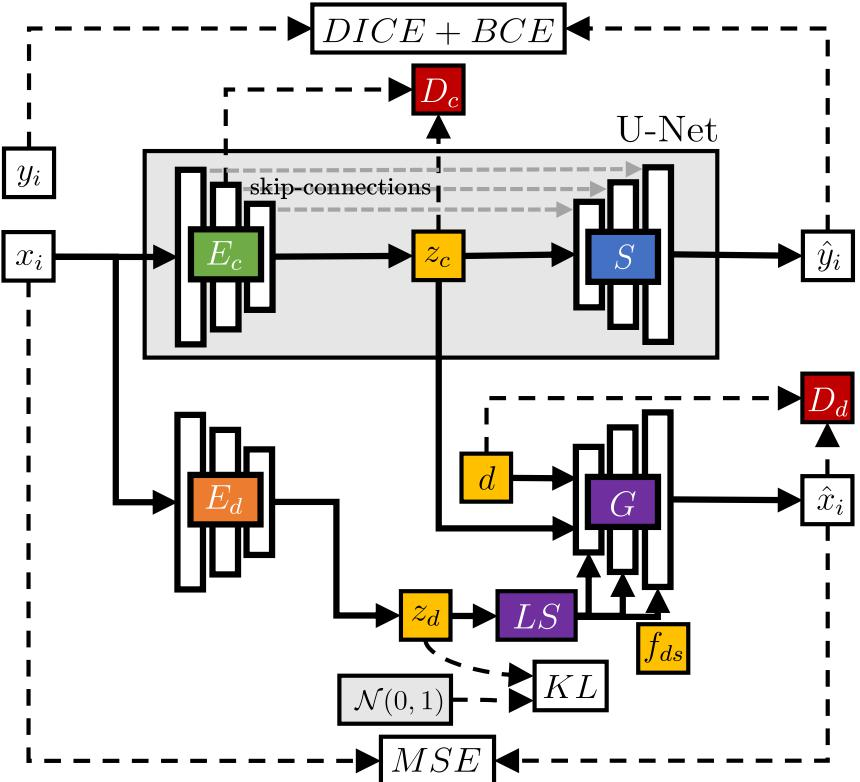

News
- 01/2025: STRAP: Robot Sub-Trajectory Retrieval for Augmented Policy Learning and HAMSTER: Hierarchical Action Models for Open-World Robot Manipulation have been
accepted to ICLR 2025
- 08/2024: URDFormer got covered by UW News
- 07/2024: Talked about ASID and URDFormer on the TWIML Podcast
- 07/2024: Starting my internship as a Robot Learning Research Intern at Bosch USA, Pittsburgh working with Jonathan Francis and Bingqing Chen
- 05/2024: URDFormer: A Pipeline for Constructing Articulated Simulation Environments from
Real-World Images has been accepted to RSS 2024
- 05/2024: DROID: A Large-Scale In-The-Wild Robot Manipulation Dataset has been accepted to
RSS 2024
- 01/2024: TA for CSE478 Fall 2024
- 01/2024: "ASID: Active Exploration for System Identification in Robotic Manipulation" has
been accepted to ICLR 2024 (oral, top 1.2%).
- 05/2023: "Modality-invariant Visual Odometry for Embodied Vision" has been accepted to
CVPR 2023.
- 03/2022: "Interactive Disentanglement: Learning Concepts by Interacting with their Prototype
Representations" has been accepted to CVPR 2022.
- 01/2022: "Dimensionality Reduction and Prioritized Exploration for Policy Search" has been
accepted to AISTATS 2022.
|
|
Research
Conference papers, workshop papers, and pre-prints.
|
|
|
PEEK: Guiding and Minimal Image Representations for Zero-Shot Generalization of Robot Manipulation Policies
Jesse Zhang*,
Marius Memmel*,
Kevin Kim,
Dieter Fox,
Jesse Thomason,
Fabio Ramos,
Erdem Bıyık,
Abhishek Gupta*,
Under Submission
arxiv
website
code
|
|
|
STRAP: Robot Sub-Trajectory Retrieval for Augmented Policy Learning
Marius Memmel*,
Jacob Berg*,
Bingqing Chen,
Abhishek Gupta†,
Jonathan Francis†
Conference on Learning Representations (ICLR), 2025
paper
arxiv
website
code
|
|
|
HAMSTER: Hierarchical Action Models for Open-World Robot Manipulation
Yi Li*,
Yuquan Deng*,
Jesse Zhang*,
Joel Jang,
Marius Memmel,
Caelan Garrett,
Fabio Ramos,
Dieter Fox,
Anqi Li,
Abhishek Gupta,
Ankit Goyal
Conference on Learning Representations (ICLR), 2025
paper
arxiv
website
|
|
|
URDFormer: A Pipeline for Constructing Articulated Simulation Environments from Real-World Images
Zoey Chen,
Aaron Walsman,
Marius Memmel,
Kaichun Mo,
Alex Fang,
Dieter Fox*,
Abhishek Gupta*
Robotics: Science and Systems (RSS), 2024
paper
website
code
|
|
|
DROID: A Large-Scale In-The-Wild Robot Manipulation Dataset
Alexander Khazatsky*,
Karl Pertsch*,
Suraj Nair,
...,
Marius Memmel,
...,
Thomas Kollar,
Sergey Levine,
Chelsea Finn
WEIRD Lab lead together with Arhan Jain
Robotics: Science and Systems (RSS), 2024
arxiv
website
|
|
|
ASID: Active Exploration for System Identification in Robotic Manipulation
Marius Memmel,
Andrew Wagenmaker,
Chuning Zhu,
Patrick Yin,
Dieter Fox,
Abhishek Gupta
Conference on Learning Representations (ICLR), 2024 (Oral
Presentation, top 1.2%)
paper
arxiv
website
code
|
|
|
Modality-invariant Visual Odometry for Embodied Vision
Marius Memmel,
Roman Bachmann,
Amir Zamir
Conference on Computer Vision and Pattern Recognition (CVPR), 2023
paper
arxiv
website
poster
code
|
|
|
Interactive Disentanglement: Learning Concepts by Interacting with their Prototype
Representations
Wolfgang Stammer,
Marius Memmel,
Patrick Schramowski,
Kristian Kersting
Conference on Computer Vision and Pattern Recognition (CVPR), 2022
paper
arxiv
code
|
|
|
Dimensionality Reduction and Prioritized Exploration for Policy Search
Marius Memmel,
Puze Liu,
Davide Tateo,
Jan Peters
International Conference on Artificial Intelligence and Statistics (AISTATS), 2022
paper
arxiv
code
poster
|


|
Adversarial Continual Learning for Multi-Domain Hippocampal Segmentation
Marius Memmel,
Camila Gonzalez,
Anirban Mukhopadhyay
Domain Adaptation and Representation Transfer (DART) at Medical Image Computing and Computer
Assisted Intervention (MICCAI), 2021
paper
arxiv
code
poster
video
|
Honors & Awards
- 2022: European Informatics Student Award: "An incentive for the brightest European students
to experience the University of Washington and the Pacific Northwest."
- 2019-2020: Deutschlandstipendium: Merit-based scholarship given to less than 1% of all
students in Germany
- 2019: Best Graduate: Award for the best graduate of Business Information Systems (Software
Engineering) at DHBW
- 2018: Baden-Württemberg-Stipendium: given to 1500 high-achieving students/year to promote
exchange
|
|